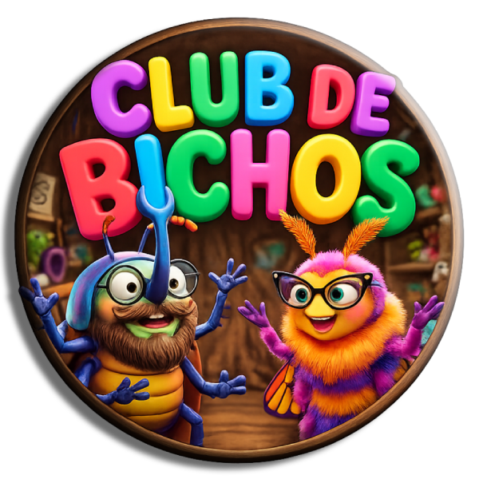

Logo.png
BICHO BÚNKER
¡Ya abrimos el nido! El refugio de Gusarapo y Musaraña donde volar en círculos es nuestra especialidad.

¡Ya abrimos el nido! El refugio de Gusarapo y Musaraña donde volar en círculos es nuestra especialidad.
Ya empezamos el club. Empezamos con mil detalles técnicos (¡típico de nosotros!), pero ya estamos volando. ¡Gracias por el aguante!
¿Eres bicho? Musaraña diseñó un test épico para mapear tus antenas y tu energía.
El segundo episodio ya está listo en el búnker. Estamos horneando el link oficial, ¡vuelve en breve para verlo!
Si te sientes identificado con Gusarapo y Musaraña, es momento de encender tu vela y mapear tu cerebro bicho.
INICIAR MAPEO